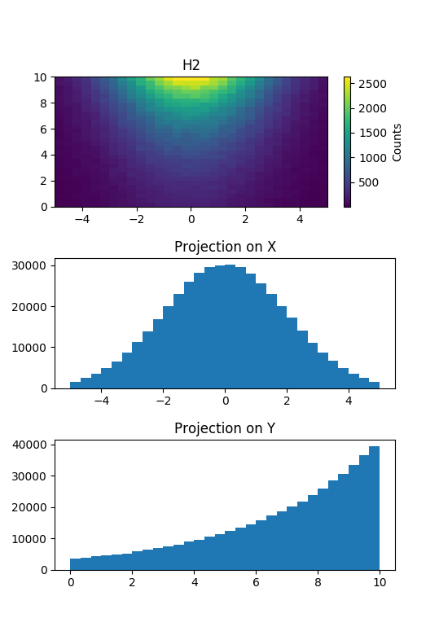

How to Project histograms¶
This example shows how to project a 2D histogram. To show the projections we use matplotlib to create a 3 by 1 grid to display multiple plots on the same window. The histograms are plotted using the plotting module mpl from this package (which internally uses matplotlib).
import random as rnd
import matplotlib.pyplot as plt
from qksplot.hist import *
from qksplot import mpl
# create histograms
h = Hist2D(30, -5, 5, 30, 0, 10, title="H2")
# fill the histogram
x, y = 0, 0
for i in range(50000):
x = rnd.gauss(0, 2)
y = 10 - rnd.expovariate(1./4.)
h.fill(x, y)
projX = h.projection_x()
projX.title = "Projection on X"
projY = h.projection_y()
projY.title = "Projection on Y"
# create a grid where to rest the plots
grid = plt.GridSpec(3, 1, wspace=0.2, hspace=0.4)
# plot h
plt.subplot(grid[0, 0])
mpl.plot_hist(h)
# plot projection on X
plt.subplot(grid[1, 0])
mpl.plot_hist(projX)
# plot projection on Y
plt.subplot(grid[2, 0])
mpl.plot_hist(projY)
mpl.show()